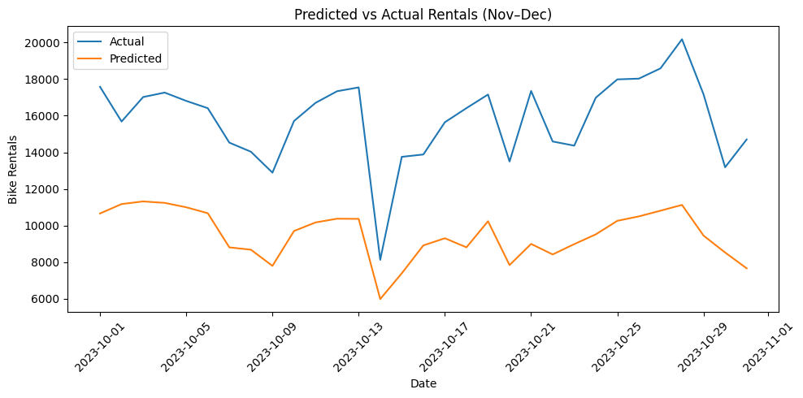

# Core Libraries
import pandas as pd
import numpy as np
import matplotlib.pyplot as plt
# Scikit-learn for preprocessing and metrics
from sklearn.model_selection import train_test_split
from sklearn.preprocessing import StandardScaler
from sklearn.metrics import mean_squared_error
# TensorFlow / Keras for neural networks
import tensorflow as tf
from tensorflow.keras.models import Sequential
from tensorflow.keras.layers import Dense
from tensorflow.keras.callbacks import EarlyStopping
# Load data
bikes = pd.read_csv('https://raw.githubusercontent.com/byui-cse/cse450-course/master/data/bikes.csv')print(daily['dteday'].max())
print(daily.tail())2023-10-31 00:00:00
dteday temp_c feels_like_c hum windspeed holiday \
4682 2023-10-27 20.225000 20.229167 0.730217 8.341667 0
4683 2023-10-28 21.537500 21.537500 0.712254 7.250000 0
4684 2023-10-29 20.595833 20.595833 0.780079 8.904167 0
4685 2023-10-30 17.129167 17.129167 0.762071 16.133333 0
4686 2023-10-31 10.258333 9.562500 0.513467 12.762500 0
workingday season weathersit casual registered count day_of_week \
4682 1 4 1.166667 6894 11689 18583 4
4683 0 4 1.041667 9505 10669 20174 5
4684 0 4 1.375000 7965 9199 17164 6
4685 1 4 1.625000 4005 9180 13185 0
4686 1 4 1.458333 4072 10630 14702 1
month day_sin day_cos month_sin month_cos
4682 10 -0.433884 -0.900969 -0.866025 0.5
4683 10 -0.974928 -0.222521 -0.866025 0.5
4684 10 -0.781831 0.623490 -0.866025 0.5
4685 10 0.000000 1.000000 -0.866025 0.5
4686 10 0.781831 0.623490 -0.866025 0.5 #Chunk 1: Data Preparation (Updated for Dictionary)
# Parse date and create datetime features
bikes['dteday'] = pd.to_datetime(bikes['dteday'])
# Group by day to get total rentals per day
daily = bikes.groupby('dteday').agg({
'temp_c': 'mean',
'feels_like_c': 'mean',
'hum': 'mean',
'windspeed': 'mean',
'holiday': 'first',
'workingday': 'first',
'season': 'first',
'weathersit': 'mean',
'casual': 'sum',
'registered': 'sum'
}).reset_index()
# Create total count
daily['count'] = daily['casual'] + daily['registered']
# Time-based features
daily['day_of_week'] = daily['dteday'].dt.dayofweek
daily['month'] = daily['dteday'].dt.month
# Cyclical encoding for day of week and month
daily['day_sin'] = np.sin(2 * np.pi * daily['day_of_week'] / 7)
daily['day_cos'] = np.cos(2 * np.pi * daily['day_of_week'] / 7)
daily['month_sin'] = np.sin(2 * np.pi * daily['month'] / 12)
daily['month_cos'] = np.cos(2 * np.pi * daily['month'] / 12)
# Final features
features = ['temp_c', 'feels_like_c', 'hum', 'windspeed', 'holiday',
'workingday', 'season', 'weathersit', 'day_sin', 'day_cos',
'month_sin', 'month_cos']
target = 'count'
# Use October for testing
train_bikes = daily[daily['dteday'] < '2023-10-01']
test_bikes = daily[(daily['dteday'] >= '2023-10-01') & (daily['dteday'] <= '2023-10-31')]
X_train = train_bikes[features]
y_train = train_bikes[target]
X_test = test_bikes[features]
y_test = test_bikes[target]
# Normalize features
scaler = StandardScaler()
X_train_scaled = scaler.fit_transform(X_train)
X_test_scaled = scaler.transform(X_test)
#Chunk 2: Model Training, Prediction, and Visualization
# Build the model
model = Sequential([
Dense(64, input_dim=X_train.shape[1], activation='relu'),
Dense(32, activation='relu'),
Dense(1)
])
model.compile(optimizer='adam', loss='mse')
# Train the model
early_stop = EarlyStopping(monitor='val_loss', patience=10, restore_best_weights=True)
history = model.fit(X_train_scaled, y_train,
validation_split=0.2,
epochs=100,
callbacks=[early_stop],
verbose=1)
# Predict on test data (Nov–Dec)
predictions = model.predict(X_test_scaled).flatten()
# Create results DataFrame
results = test_bikes[['dteday']].copy()
results['predicted_count'] = predictions
results['actual_count'] = y_test.values
# Save predictions to CSV
results.to_csv('bike_predictions_nov_dec.csv', index=False)
# Plot predictions vs actuals
plt.figure(figsize=(10,5))
plt.plot(results['dteday'], results['actual_count'], label='Actual')
plt.plot(results['dteday'], results['predicted_count'], label='Predicted')
plt.xlabel('Date')
plt.ylabel('Bike Rentals')
plt.title('Predicted vs Actual Rentals (Nov–Dec)')
plt.legend()
plt.xticks(rotation=45)
plt.tight_layout()
plt.show()
Epoch 1/100/usr/local/lib/python3.11/dist-packages/keras/src/layers/core/dense.py:87: UserWarning: Do not pass an `input_shape`/`input_dim` argument to a layer. When using Sequential models, prefer using an `Input(shape)` object as the first layer in the model instead.
super().__init__(activity_regularizer=activity_regularizer, **kwargs)117/117 ━━━━━━━━━━━━━━━━━━━━ 2s 4ms/step - loss: 70424816.0000 - val_loss: 113714456.0000 Epoch 2/100 117/117 ━━━━━━━━━━━━━━━━━━━━ 0s 3ms/step - loss: 69319712.0000 - val_loss: 108094120.0000 Epoch 3/100 117/117 ━━━━━━━━━━━━━━━━━━━━ 1s 3ms/step - loss: 65332012.0000 - val_loss: 93672584.0000 Epoch 4/100 117/117 ━━━━━━━━━━━━━━━━━━━━ 1s 3ms/step - loss: 53595780.0000 - val_loss: 71537792.0000 Epoch 5/100 117/117 ━━━━━━━━━━━━━━━━━━━━ 1s 3ms/step - loss: 39475808.0000 - val_loss: 48906092.0000 Epoch 6/100 117/117 ━━━━━━━━━━━━━━━━━━━━ 1s 3ms/step - loss: 25133076.0000 - val_loss: 33694528.0000 Epoch 7/100 117/117 ━━━━━━━━━━━━━━━━━━━━ 0s 3ms/step - loss: 17806370.0000 - val_loss: 25685034.0000 Epoch 8/100 117/117 ━━━━━━━━━━━━━━━━━━━━ 0s 3ms/step - loss: 14929171.0000 - val_loss: 21343044.0000 Epoch 9/100 117/117 ━━━━━━━━━━━━━━━━━━━━ 0s 3ms/step - loss: 13379225.0000 - val_loss: 18579612.0000 Epoch 10/100 117/117 ━━━━━━━━━━━━━━━━━━━━ 1s 3ms/step - loss: 11583489.0000 - val_loss: 16696055.0000 Epoch 11/100 117/117 ━━━━━━━━━━━━━━━━━━━━ 1s 3ms/step - loss: 10681658.0000 - val_loss: 15350994.0000 Epoch 12/100 117/117 ━━━━━━━━━━━━━━━━━━━━ 1s 3ms/step - loss: 10192391.0000 - val_loss: 14327760.0000 Epoch 13/100 117/117 ━━━━━━━━━━━━━━━━━━━━ 1s 3ms/step - loss: 9464767.0000 - val_loss: 13581077.0000 Epoch 14/100 117/117 ━━━━━━━━━━━━━━━━━━━━ 1s 4ms/step - loss: 9312943.0000 - val_loss: 12862096.0000 Epoch 15/100 117/117 ━━━━━━━━━━━━━━━━━━━━ 1s 5ms/step - loss: 9067448.0000 - val_loss: 12379151.0000 Epoch 16/100 117/117 ━━━━━━━━━━━━━━━━━━━━ 1s 4ms/step - loss: 8569479.0000 - val_loss: 12206759.0000 Epoch 17/100 117/117 ━━━━━━━━━━━━━━━━━━━━ 1s 5ms/step - loss: 8200425.5000 - val_loss: 11845378.0000 Epoch 18/100 117/117 ━━━━━━━━━━━━━━━━━━━━ 1s 3ms/step - loss: 8044232.0000 - val_loss: 11544975.0000 Epoch 19/100 117/117 ━━━━━━━━━━━━━━━━━━━━ 0s 3ms/step - loss: 8199983.5000 - val_loss: 11423943.0000 Epoch 20/100 117/117 ━━━━━━━━━━━━━━━━━━━━ 1s 3ms/step - loss: 7992178.0000 - val_loss: 11225510.0000 Epoch 21/100 117/117 ━━━━━━━━━━━━━━━━━━━━ 0s 3ms/step - loss: 7937254.0000 - val_loss: 11010642.0000 Epoch 22/100 117/117 ━━━━━━━━━━━━━━━━━━━━ 0s 3ms/step - loss: 7774034.5000 - val_loss: 10963210.0000 Epoch 23/100 117/117 ━━━━━━━━━━━━━━━━━━━━ 0s 3ms/step - loss: 7418599.5000 - val_loss: 11082862.0000 Epoch 24/100 117/117 ━━━━━━━━━━━━━━━━━━━━ 0s 3ms/step - loss: 7302108.0000 - val_loss: 11027010.0000 Epoch 25/100 117/117 ━━━━━━━━━━━━━━━━━━━━ 1s 3ms/step - loss: 7468162.5000 - val_loss: 10925253.0000 Epoch 26/100 117/117 ━━━━━━━━━━━━━━━━━━━━ 1s 3ms/step - loss: 7667901.0000 - val_loss: 10691827.0000 Epoch 27/100 117/117 ━━━━━━━━━━━━━━━━━━━━ 1s 3ms/step - loss: 7577240.5000 - val_loss: 10710919.0000 Epoch 28/100 117/117 ━━━━━━━━━━━━━━━━━━━━ 1s 4ms/step - loss: 7587403.0000 - val_loss: 10595903.0000 Epoch 29/100 117/117 ━━━━━━━━━━━━━━━━━━━━ 1s 3ms/step - loss: 7521169.5000 - val_loss: 10452062.0000 Epoch 30/100 117/117 ━━━━━━━━━━━━━━━━━━━━ 1s 3ms/step - loss: 7478130.0000 - val_loss: 10501903.0000 Epoch 31/100 117/117 ━━━━━━━━━━━━━━━━━━━━ 0s 3ms/step - loss: 7500408.0000 - val_loss: 10533403.0000 Epoch 32/100 117/117 ━━━━━━━━━━━━━━━━━━━━ 1s 3ms/step - loss: 7334494.0000 - val_loss: 10549941.0000 Epoch 33/100 117/117 ━━━━━━━━━━━━━━━━━━━━ 1s 3ms/step - loss: 7265127.5000 - val_loss: 10694477.0000 Epoch 34/100 117/117 ━━━━━━━━━━━━━━━━━━━━ 1s 3ms/step - loss: 7366901.5000 - val_loss: 10454693.0000 Epoch 35/100 117/117 ━━━━━━━━━━━━━━━━━━━━ 1s 3ms/step - loss: 7210457.0000 - val_loss: 10596307.0000 Epoch 36/100 117/117 ━━━━━━━━━━━━━━━━━━━━ 1s 5ms/step - loss: 7338425.5000 - val_loss: 10472235.0000 Epoch 37/100 117/117 ━━━━━━━━━━━━━━━━━━━━ 1s 4ms/step - loss: 6967924.0000 - val_loss: 10314968.0000 Epoch 38/100 117/117 ━━━━━━━━━━━━━━━━━━━━ 1s 5ms/step - loss: 7318820.5000 - val_loss: 10270708.0000 Epoch 39/100 117/117 ━━━━━━━━━━━━━━━━━━━━ 1s 3ms/step - loss: 7068828.5000 - val_loss: 10651185.0000 Epoch 40/100 117/117 ━━━━━━━━━━━━━━━━━━━━ 1s 3ms/step - loss: 7181523.0000 - val_loss: 10474749.0000 Epoch 41/100 117/117 ━━━━━━━━━━━━━━━━━━━━ 0s 3ms/step - loss: 7175226.0000 - val_loss: 10387621.0000 Epoch 42/100 117/117 ━━━━━━━━━━━━━━━━━━━━ 1s 3ms/step - loss: 7219342.5000 - val_loss: 10123820.0000 Epoch 43/100 117/117 ━━━━━━━━━━━━━━━━━━━━ 1s 3ms/step - loss: 7197482.5000 - val_loss: 10085655.0000 Epoch 44/100 117/117 ━━━━━━━━━━━━━━━━━━━━ 0s 3ms/step - loss: 7163026.0000 - val_loss: 9921490.0000 Epoch 45/100 117/117 ━━━━━━━━━━━━━━━━━━━━ 0s 3ms/step - loss: 7312141.0000 - val_loss: 10088922.0000 Epoch 46/100 117/117 ━━━━━━━━━━━━━━━━━━━━ 1s 3ms/step - loss: 6910817.5000 - val_loss: 10365882.0000 Epoch 47/100 117/117 ━━━━━━━━━━━━━━━━━━━━ 1s 3ms/step - loss: 7308799.5000 - val_loss: 9977747.0000 Epoch 48/100 117/117 ━━━━━━━━━━━━━━━━━━━━ 1s 3ms/step - loss: 7313624.0000 - val_loss: 10212233.0000 Epoch 49/100 117/117 ━━━━━━━━━━━━━━━━━━━━ 1s 3ms/step - loss: 6759995.5000 - val_loss: 10160584.0000 Epoch 50/100 117/117 ━━━━━━━━━━━━━━━━━━━━ 0s 3ms/step - loss: 7037776.0000 - val_loss: 10263839.0000 Epoch 51/100 117/117 ━━━━━━━━━━━━━━━━━━━━ 0s 3ms/step - loss: 7218991.5000 - val_loss: 10135973.0000 Epoch 52/100 117/117 ━━━━━━━━━━━━━━━━━━━━ 1s 3ms/step - loss: 7408150.0000 - val_loss: 10003939.0000 Epoch 53/100 117/117 ━━━━━━━━━━━━━━━━━━━━ 0s 3ms/step - loss: 7018993.5000 - val_loss: 9859009.0000 Epoch 54/100 117/117 ━━━━━━━━━━━━━━━━━━━━ 1s 3ms/step - loss: 7004226.0000 - val_loss: 9934395.0000 Epoch 55/100 117/117 ━━━━━━━━━━━━━━━━━━━━ 1s 3ms/step - loss: 7328979.0000 - val_loss: 10153591.0000 Epoch 56/100 117/117 ━━━━━━━━━━━━━━━━━━━━ 0s 3ms/step - loss: 6883759.5000 - val_loss: 9943611.0000 Epoch 57/100 117/117 ━━━━━━━━━━━━━━━━━━━━ 0s 3ms/step - loss: 7001976.5000 - val_loss: 10043222.0000 Epoch 58/100 117/117 ━━━━━━━━━━━━━━━━━━━━ 0s 4ms/step - loss: 6947211.0000 - val_loss: 9815245.0000 Epoch 59/100 117/117 ━━━━━━━━━━━━━━━━━━━━ 1s 4ms/step - loss: 7157318.0000 - val_loss: 9762445.0000 Epoch 60/100 117/117 ━━━━━━━━━━━━━━━━━━━━ 1s 4ms/step - loss: 6977111.5000 - val_loss: 9830232.0000 Epoch 61/100 117/117 ━━━━━━━━━━━━━━━━━━━━ 1s 5ms/step - loss: 7131560.0000 - val_loss: 10223201.0000 Epoch 62/100 117/117 ━━━━━━━━━━━━━━━━━━━━ 1s 4ms/step - loss: 6967989.0000 - val_loss: 9954341.0000 Epoch 63/100 117/117 ━━━━━━━━━━━━━━━━━━━━ 0s 3ms/step - loss: 7139183.0000 - val_loss: 9955302.0000 Epoch 64/100 117/117 ━━━━━━━━━━━━━━━━━━━━ 1s 3ms/step - loss: 6830925.5000 - val_loss: 9841929.0000 Epoch 65/100 117/117 ━━━━━━━━━━━━━━━━━━━━ 0s 3ms/step - loss: 7112849.0000 - val_loss: 10012460.0000 Epoch 66/100 117/117 ━━━━━━━━━━━━━━━━━━━━ 1s 3ms/step - loss: 7124915.0000 - val_loss: 9493503.0000 Epoch 67/100 117/117 ━━━━━━━━━━━━━━━━━━━━ 1s 3ms/step - loss: 7223541.0000 - val_loss: 9616753.0000 Epoch 68/100 117/117 ━━━━━━━━━━━━━━━━━━━━ 1s 3ms/step - loss: 6878581.5000 - val_loss: 10126824.0000 Epoch 69/100 117/117 ━━━━━━━━━━━━━━━━━━━━ 1s 3ms/step - loss: 6650340.5000 - val_loss: 10029972.0000 Epoch 70/100 117/117 ━━━━━━━━━━━━━━━━━━━━ 1s 3ms/step - loss: 7034530.5000 - val_loss: 9778288.0000 Epoch 71/100 117/117 ━━━━━━━━━━━━━━━━━━━━ 1s 3ms/step - loss: 6990830.0000 - val_loss: 9854739.0000 Epoch 72/100 117/117 ━━━━━━━━━━━━━━━━━━━━ 1s 3ms/step - loss: 6787386.5000 - val_loss: 9544423.0000 Epoch 73/100 117/117 ━━━━━━━━━━━━━━━━━━━━ 0s 3ms/step - loss: 7070328.5000 - val_loss: 9662549.0000 Epoch 74/100 117/117 ━━━━━━━━━━━━━━━━━━━━ 1s 3ms/step - loss: 6939409.0000 - val_loss: 9968430.0000 Epoch 75/100 117/117 ━━━━━━━━━━━━━━━━━━━━ 1s 3ms/step - loss: 6815552.5000 - val_loss: 10148884.0000 Epoch 76/100 117/117 ━━━━━━━━━━━━━━━━━━━━ 1s 3ms/step - loss: 6747764.5000 - val_loss: 9848731.0000 1/1 ━━━━━━━━━━━━━━━━━━━━ 0s 70ms/step
